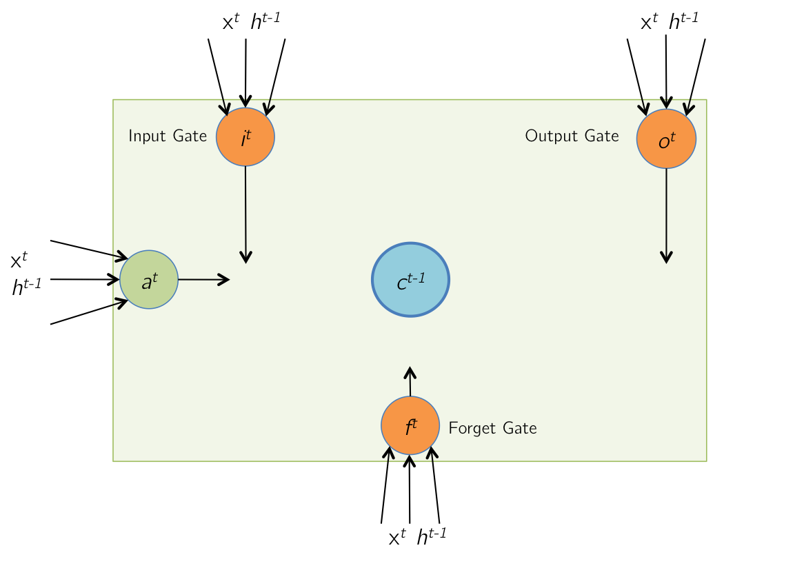
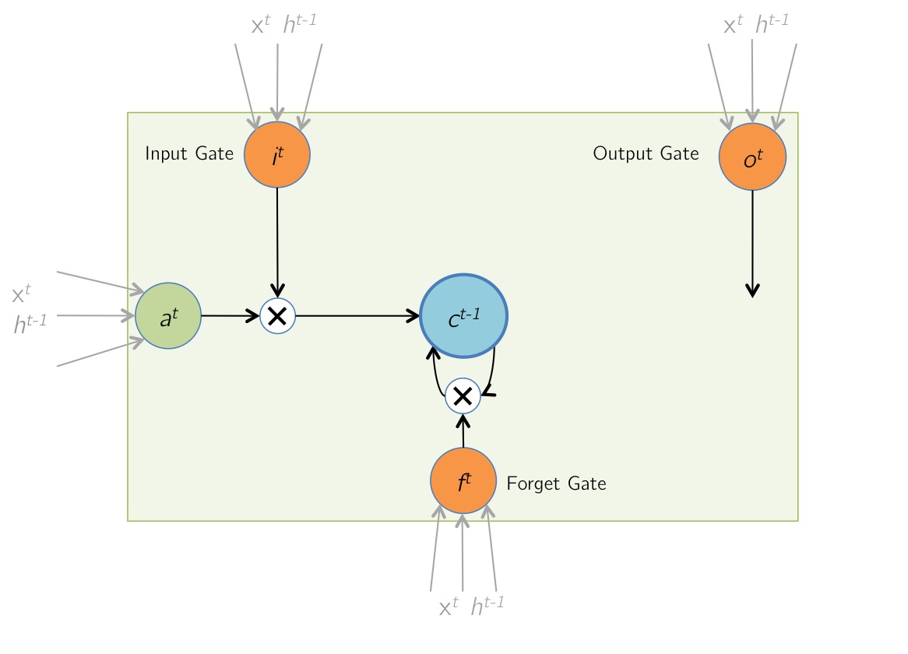
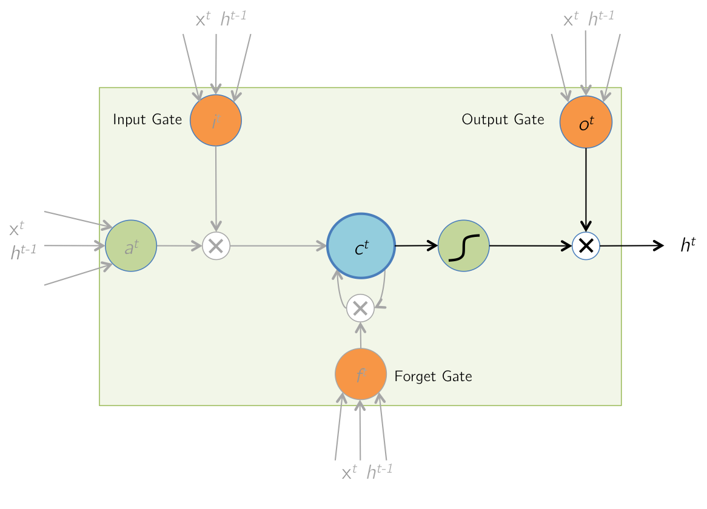
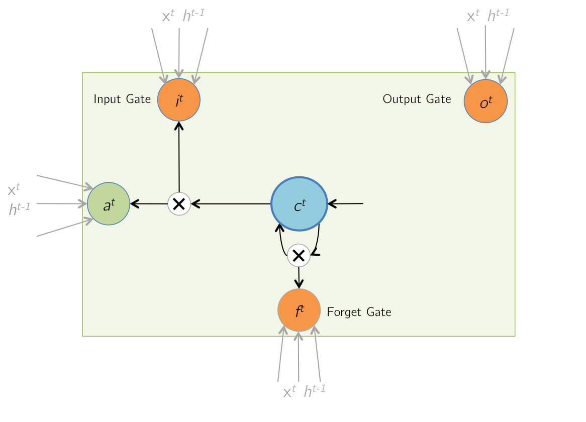
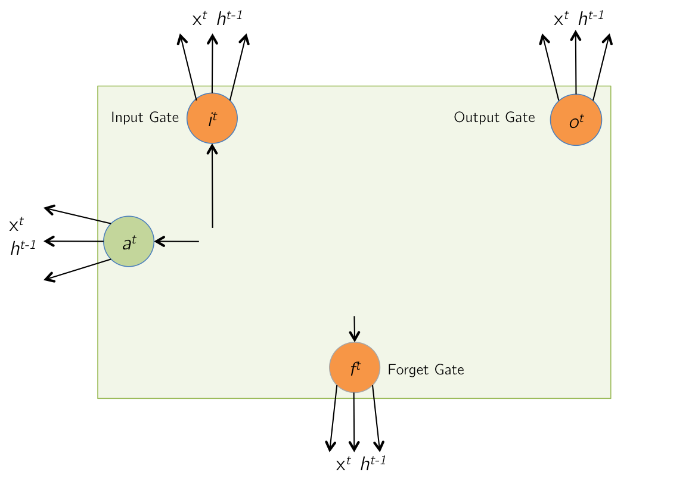

LSTM Forward and Backward Pass
Introduction
Hi, I'm Arun, a graduate student at UIUC.
While trying to learn more about recurrent neural networks, I had a hard time finding a source which explained the math behind an LSTM, especially the backpropagation, which is a bit tricky for someone new to the area. Frameworks such as Torch and Theano make life easy through automatic differentiation, which takes away the pain of having to manually compute gradient equations. However, to gain a better understanding of how things actually work and satisfy curiosity, we must dive into the details. This is an attempt at presenting the LSTM forward and backward equations in a manner which can be easily digested.
I would recommend going through A Quick Introduction to Backpropagation before proceeding further, to familiarize oneself with how backpropagation and the chain rule work, as well as the notation used in the slides that follow. Basic knowledge of neural networks, elementary calculus and matrix algebra is recommended.
Forward Pass: Initial State
Initially, at time t, the memory cells of the LSTM contain values from the
previous iteration at time (t−1).
Forward Pass: Input and Gate Computation
At time t, The LSTM receives a new input vector xt (including the bias term), as well as a vector of its output at the previous timestep, ht−1.
|

|
atitftot=tanh(Wcxt+Ucht−1)=tanh(a^t)=σ(Wixt+Uiht−1)=σ(i^t)=σ(Wfxt+Ufht−1)=σ(f^t)=σ(Woxt+Uoht−1)=σ(o^t)
Ignoring the non-linearities,
zt=⎡⎣⎢⎢⎢⎢⎢a^ti^tf^to^t⎤⎦⎥⎥⎥⎥⎥=⎡⎣⎢⎢⎢⎢WcWiWfWoUcUiUfUo⎤⎦⎥⎥⎥⎥×[xtht−1]=W×It
|
If the input xt is of size n×1, and we have d memory cells, then the size of each of W∗ and U∗ is d×n, and and d×d resp. The size of W will then be 4d×(n+d).
Note that each one of the d memory cells has its own weights W∗ and U∗, and that the only time memory cell values are shared with other LSTM units is during the product with U∗.
Forward Pass: Memory Cell Update
During this step, the values of the memory cells are updated with a combination of at,
and the previous cell
contents ct−1. The combination is based on the magnitudes of the input gate it and the
forget gate ft. ⊙ denotes elementwise product (Hadamard product).
|

|
ct=it⊙at+ft⊙ct−1
|
Forward Pass: Updated Memory Cells
The contents of the memory cells are updated to the latest values.
Forward Pass: Output
Finally, the LSTM cell computes an output value by passing the updated (and current) cell value through a non-linearity.
The output gate determines how much of this computed output is actually passed out of the cell as the final output ht.
|

|
ht=ot⊙tanh(ct)
|
Forward Pass: Unrolled Network
The unrolled network during the forward pass is shown below. Note that the gates have not been shown for brevity. An interesting point to note here is that in the computational graph below, the cell state at time T, cT is responsible for computing hT as well as the next cell state cT+1.
At each time step, the cell output hT is shown to be passed to some more layers on which a cost function CT is computed, as the way an LSTM would be used in a typical application like captioning or language modeling.
Backward Pass: Unrolled Network
The unrolled network during the backward pass is shown below. All the arrows in the previous slide have now changed their direction. The cell state at time T, cT receives gradients from hT as well as the next cell state cT+1. The next few slides focus on computing these two gradients. At any time step T, these two gradients are accumulated before being backpropagated to the layers below the cell and the previous time steps.
Backward Pass: Output
|
|
Forward Pass: htGiven δht=ot⊙tanh(ct)=∂E∂ht,find δot,δct
∂E∂oti∴δot∂E∂cti∴δct=∂E∂hti⋅∂hti∂oti=δhti⋅tanh(cti)=δht⊙tanh(ct)=∂E∂hti⋅∂hti∂cti=δhti⋅oti⋅(1−tanh2(cti))+=δht⊙ot⊙(1−tanh2(ct))
Note that the += above is so that this gradient is added to gradient from time step (t+1) (calculated on next slide, refer to the gradient accumulation mentioned in the previous slide)
|
Backward Pass: LSTM Memory Cell Update
|

|
Forward Pass: ctGiven δct=it⊙at+ft⊙ct−1=∂E∂ct,find δit,δat,δft,δct−1
∂E∂iti∴δit∂E∂ati∴δat=∂E∂cti⋅∂cti∂iti=δcti⋅ati=δct⊙at=∂E∂cti⋅∂cti∂ati=δcti⋅iti=δct⊙it∂E∂fti∴δft∂E∂ct−1i∴δct−1=∂E∂cti⋅∂cti∂fti=δcti⋅ct−1i=δct⊙ct−1=∂E∂cti⋅∂cti∂ct−1i=δcti⋅fti=δct⊙ft
|
Backward Pass: Input and Gate Computation - I
|

|
Forward Pass: ztGiven δat,δit,=⎡⎣⎢⎢⎢⎢⎢a^ti^tf^to^t⎤⎦⎥⎥⎥⎥⎥=W×Itδft,δot, find δzt
δa^tδi^tδf^tδo^tδzt=δat⊙(1−tanh2(a^t))=δit⊙it⊙(1−it)=δft⊙ft⊙(1−ft)=δot⊙ot⊙(1−ot)=[δa^t,δi^t,δf^t,δo^t]T
|
Backward Pass: Input and Gate Computation - II
|
|
Forward Pass: ztGiven δzt, find =W×ItδWt,δht−1
δItAs Itδht−1δWt=WT×δzt=[xtht−1], can be retrieved from δIt=δzt×(It)T
|
Parameter Update
If input x has T time-steps, i.e. x=[x1,x2,⋯,xT], then
δW=∑t=1TδWt
W is then updated using an appropriate Stochastic Gradient Descent solver.
LSTM Forward and Backward Pass
Introduction
Hi, I'm Arun, a graduate student at UIUC.
While trying to learn more about recurrent neural networks, I had a hard time finding a source which explained the math behind an LSTM, especially the backpropagation, which is a bit tricky for someone new to the area. Frameworks such as Torch and Theano make life easy through automatic differentiation, which takes away the pain of having to manually compute gradient equations. However, to gain a better understanding of how things actually work and satisfy curiosity, we must dive into the details. This is an attempt at presenting the LSTM forward and backward equations in a manner which can be easily digested.
I would recommend going through A Quick Introduction to Backpropagation before proceeding further, to familiarize oneself with how backpropagation and the chain rule work, as well as the notation used in the slides that follow. Basic knowledge of neural networks, elementary calculus and matrix algebra is recommended.